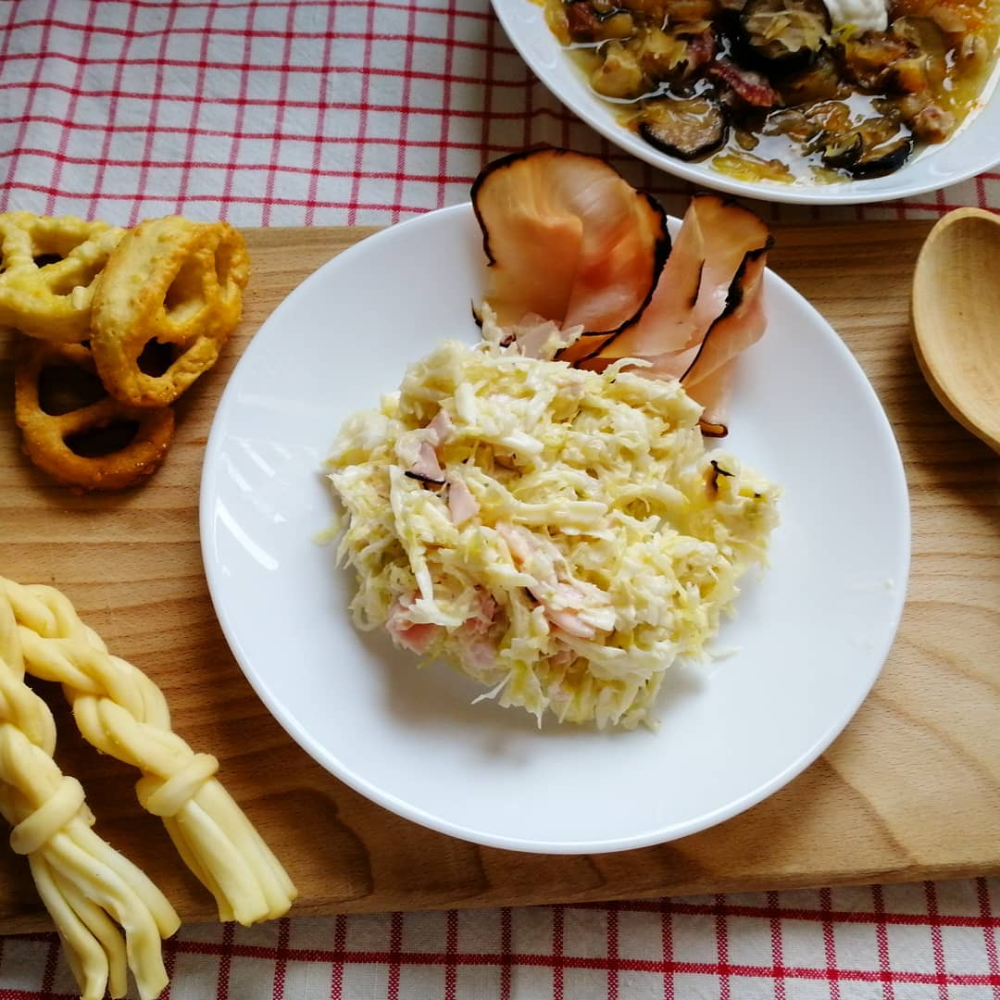

Šalát z kyslej kapusty podľa @zsmieskova — Normy Jedál
Jeden z najlepších šalátov 👌dnes s moravským mäsom. Mňam #sauerkrautsalad #salatzkyslejkapusty #dnesjem #todayeat #vkuchyni #beutifulcuisines #topjedlo #topfood #foodphotography #foodpict #foodie #foodlover #homechef #homekitchen #uzasnejedlo #delisious #loveit #followme